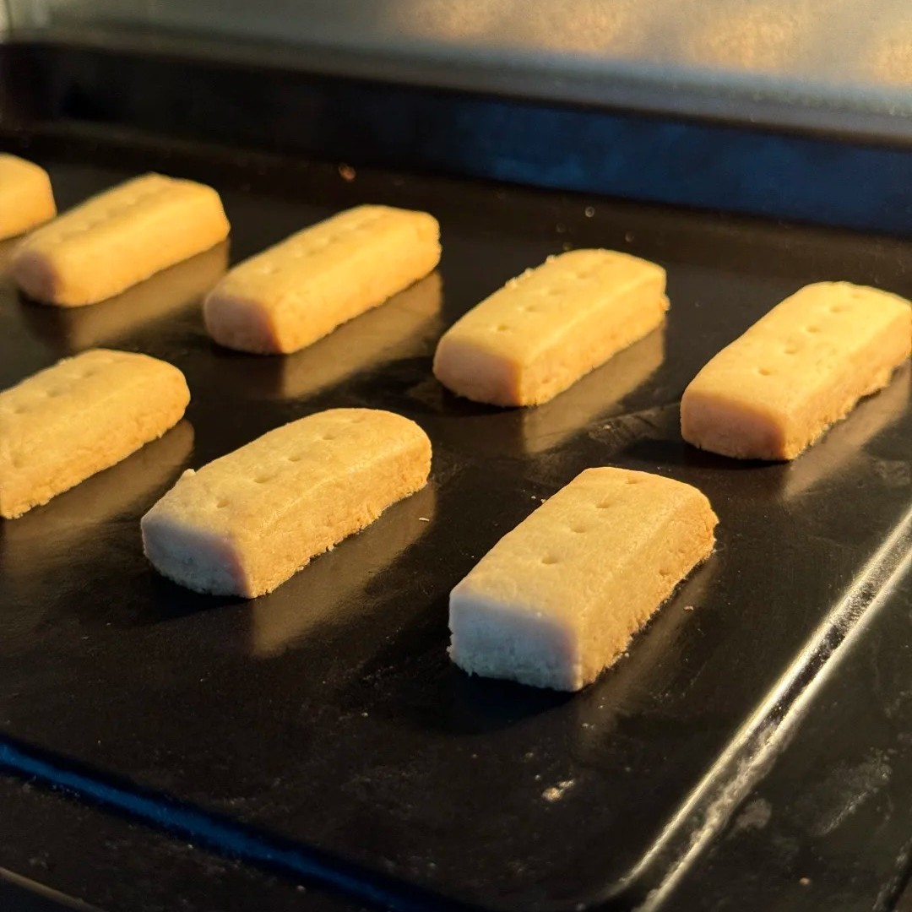
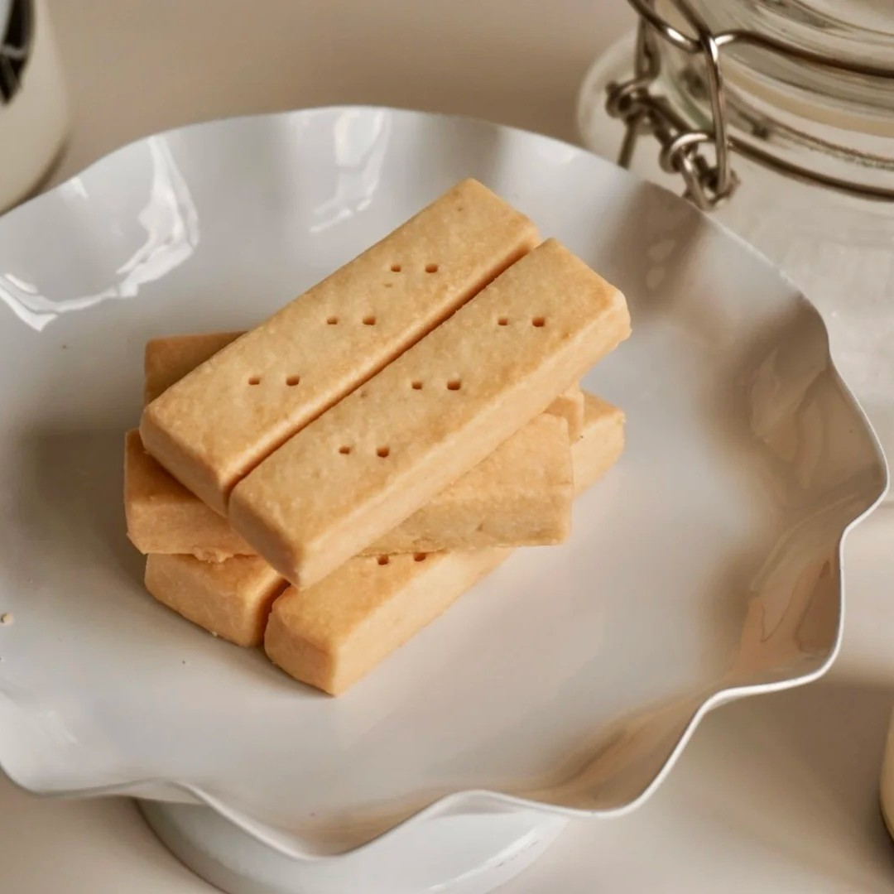
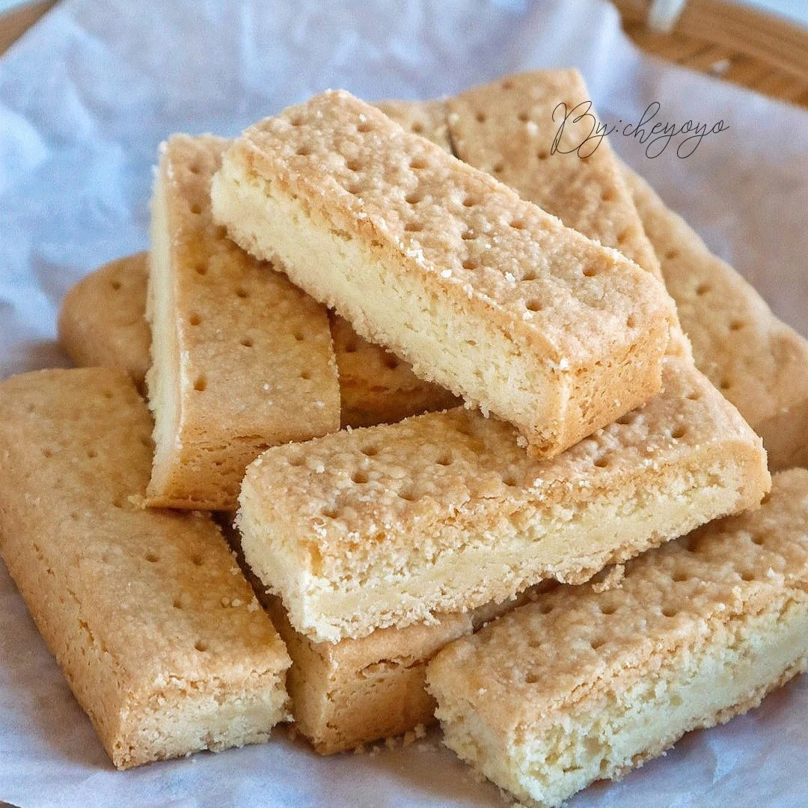

黄油饼干



苏格兰传统黄油饼干（Shortbread）是苏格兰代表性烘焙食品，以面粉、粘米粉、黄油、糖粉为主要原料制成，中世纪被定义为“特别的面粉甜点”。其基础配方坚持黄油、糖、面粉按1:2:3比例调配，通过黄油抑制面筋形成保证酥脆口感 。传统形状分为Petticoat Tails（三角形）、Shortbread Rounds（整圆形）、Shortbread Fingers（长条形）三种，节日版本则有南瓜形、雪人形、心形等造型。该饼干起源于中世纪面包干演变，早期用黄油替代酵母，古代为奢侈食品仅限节庆食用，现代成为日常点心。制作工艺包含黄油软化打发、混合粉类、冷藏定型、低温烘焙等步骤，需控制温度避免面团发粘，烤箱温度通常在140℃-175℃范围。具有酥脆质地与片状结构，部分配方添加柠檬皮屑或香草精增加风味。
制作方法：